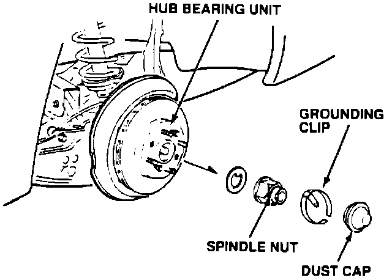
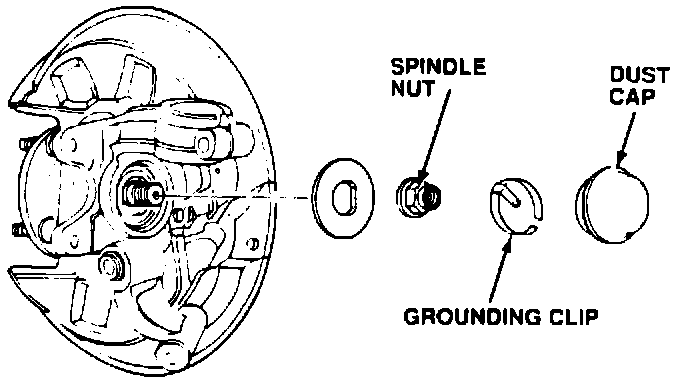

AM Radio Static
January 8, 1990BULLETIN NO
90-001
YEAR
1986 - 1990
MODEL
LEGEND
VIN APPLICATION
ALL
Legend AM Static
SYMPTOM
Static on AM band stations when the car is moving faster than 10 mph in dry weather.
CORRECTIVE ACTION
Install a grounding clip on each rear wheel spindle nut.
'87 thru '90 Coupe
'89 thru '90 Sedan:

^ Remove the rear wheels to allow access to the dust cap.
'86 thru '88 Sedan:

^ Removal of the rear wheels is not necessary because the dust cap is on the inboard side of the rear knuckle.
1. Remove the rear wheel bearing dust cap.
2. Fit the grounding clip, listed under PARTS INFORMATION, to the spindle nut.
3. Reinstall the dust cap and, if removed, the rear wheel.
4. Repeat the procedure on the other rear wheel.
PARTS INFORMATION
Grounding Clips, pkg. of two. (Static Suppressor Kit)
Part Number Application
PIN 42326-SD4-000AA '89 - 90 Legend Sedan
'87 - 90 Legend Coupe
P/N 42326-SD4-001AA '86 - 88 Legend Sedan
WARRANTY INFORMATION
Operation number: 418050
Flat rate time: 0.4 both sides
Failed P/N: 42326-SGO-000
Defect code: 042
Contention code: F02